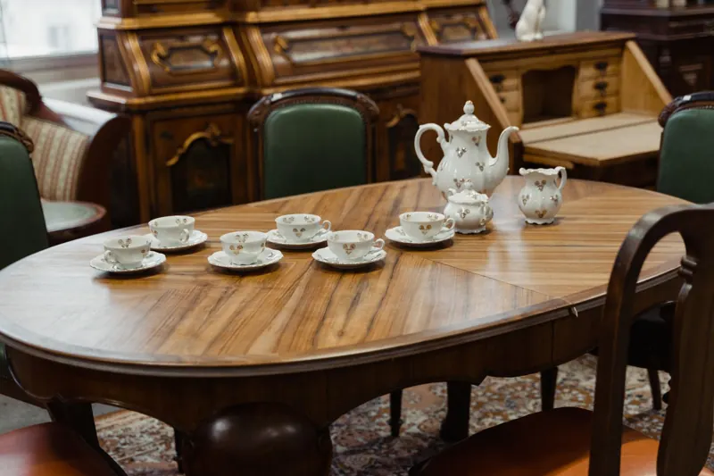
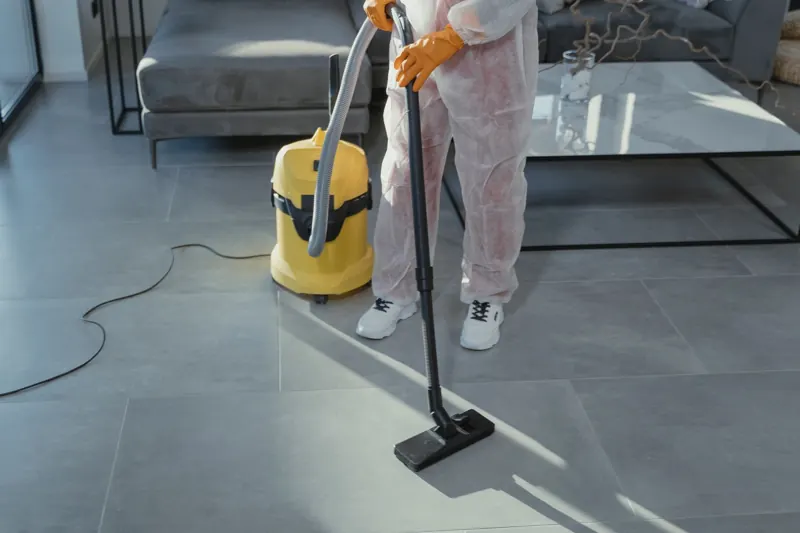

Tömma dödsbo
Komplett hjälp med sortering, bortforsling och återvinning av bohag. Vi tar hand om hela hemmet, från små lägenheter till stora villor och gårdar.
Läs mer →Professionell hjälp med tömning, värdering och sanering av dödsbo i Halmstad.
Vi hjälper privatpersoner och anhöriga med dödsbon i Halmstad och närliggande områden. Målet är en process som ger trygghet och minskar stress, med tjänster som passar både små lägenheter och större fastigheter.
Vi kan ofta vara på plats inom 24 timmar i Halmstad med omnejd. Kontakta oss så bokar vi en tid som passar er, och ni får en kostnadsfri bedömning av dödsboet.
Från första kontakt till färdig bostad hanterar vi tömning, värdering, bortforsling, städning och sanering. Vi kan även köpa hela eller delar av bohaget. Allt sker via en och samma kontaktperson.
Komplett hjälp med sortering, bortforsling och återvinning av bohag. Vi tar hand om hela hemmet, från små lägenheter till stora villor och gårdar.
Läs mer →
Professionell värdering av bohag, möbler, konst, smycken, design och samlarföremål. Vi hjälper dig att se vad som har ett värde innan något körs bort.
Läs mer →
Diskret och professionell sanering av bostäder efter tömning, inklusive lukt- och hygienproblem, så att bostaden återställs i gott skick.
Läs mer →Vi kan ofta vara på plats inom 24 timmar i Halmstad med omnejd.
Vi arbetar med omtanke om både de anhöriga och den avlidnes hem.
Tömning, värdering, bortforsling, städning och sanering via en kontakt.
Från små lägenheter till stora villor och fastigheter.
Vi samarbetar med aktörer i branschen för att kunna erbjuda helhetslösningar.
Göteborgsregionen, Halland, Bohuslän och övriga Västra Götaland.
Förutom Halmstad hjälper vi till i närliggande orter:
Ring eller skicka en förfrågan. Vi lyssnar in situationen och bokar en tid som passar er.
Vi besöker bostaden, går igenom bohaget och ger en tydlig bild av vad som behöver göras.
Tillsammans bestämmer vi omfattning, tidsplan och vad som ska sparas, säljas, skänkas eller bort.
Vi tömmer, värderar, köper, städar och sanerar enligt planen, med en kontaktperson hela vägen.
Bostaden lämnas tom och klar för försäljning, uthyrning eller överlämning till hyresvärd.
Vi kan ofta vara på plats inom 24 timmar i Halmstad med omnejd. Ring oss på 070-559 04 65 så går vi igenom läget direkt.
Den första bedömningen är kostnadsfri. Efter besöket lämnar vi ett tydligt förslag på upplägg.
Tömning, värdering, köp, städning och sanering av dödsbo, samt röjning, samlarsanering, blodsanering och liksanering. Allt hanteras genom en och samma kontakt.
Förutom Halmstad hjälper vi till i Varberg, Falkenberg, Ullared, Tvååker, Bua, Åsa och Kungsbacka, samt övriga Västsverige.
Kontakt
Ring, mejla eller skicka en förfrågan. Den första bedömningen är kostnadsfri.
Exportgatan 73, 422 46 Hisings Backa
Måndag–fredag 08:00–18:00
Helger enligt överenskommelse